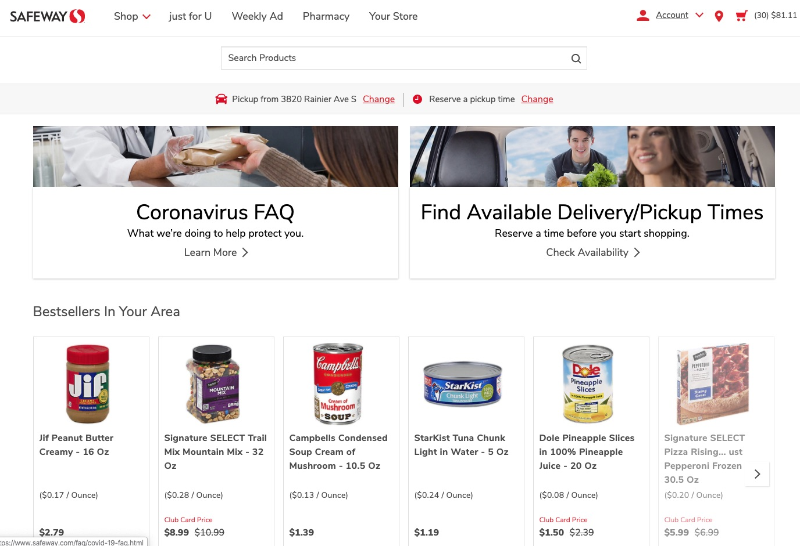
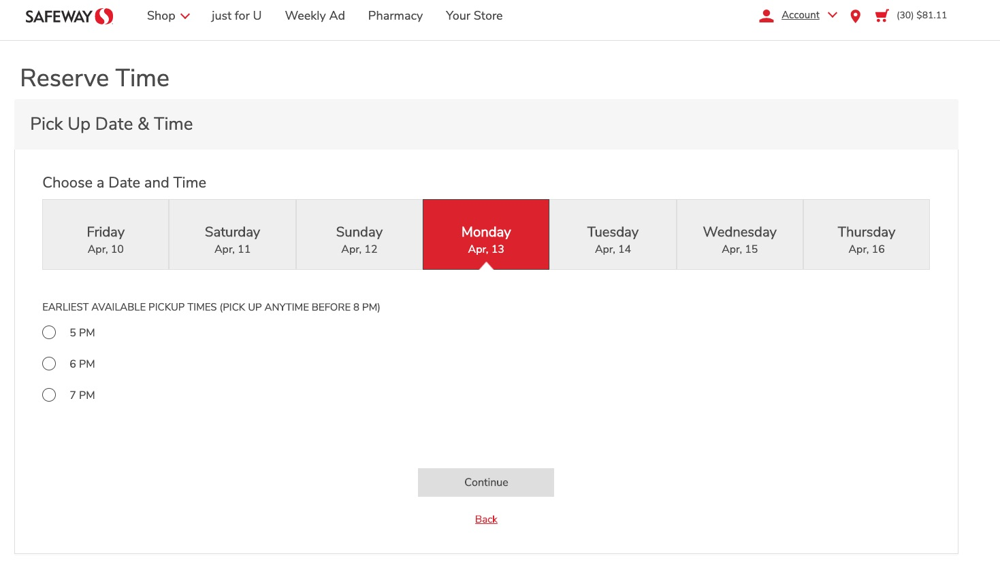
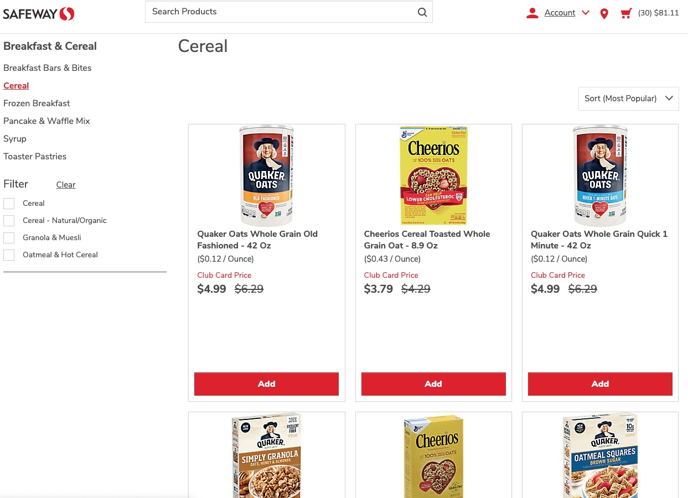
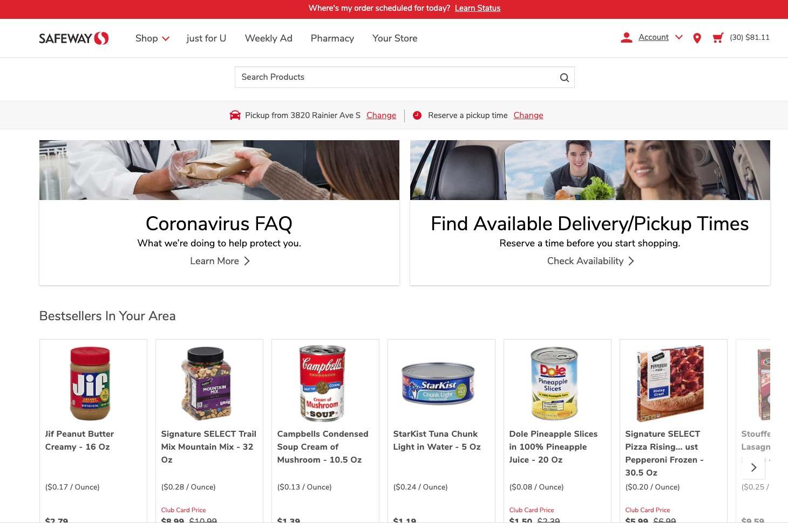

I know for some people, ordering groceries online is nothing new. They’re busy. And they found that the convenience of ordering online saves time and stress. But I’ve always dragged myself to the grocery store each Sunday to save money on delivery fees, armed with my shopping list, walking the miles (it feels like miles!) up and down the grocery aisles, loading up my cart. And most people are just like me.
Now that 95% of Americans are under orders to stay home online grocery shopping has suddenly become a thing.
Last week, I put in an order for a Costco delivery. And this week I put in an order at Safeway for my parents who live in Northern Virginia. The sudden surge to grocery shop online meant that I actually struggled to get those orders in. Most stores had no delivery openings, so I had to shop around websites and finally realized that some refresh at midnight for a day a week away. In my effort to find an open slot, and quickly load the groceries before I lost the slot, I learned a bit about what’s easy and not so easy on these sites.
Safeway.com - A Port In A Storm?
This blog is a user experience review of Safeway.com
Purpose of the site: It’s interesting because I think the purpose of this website has changed, almost overnight. Where before it was likely a website simply for the sake of having one, with store hours and a small online shopping and delivery business, now the express purpose of people visiting the site is to put in a grocery order for delivery or pickup. Users like me who had never visited the site before are using it to place orders rather than find out basic details about the store. And we're using the page with a sense of urgency and a little bit of fear. Will I be able to get the groceries in time?
I used Krug’s guidelines to analyze the site:
- Clarity - are things where I would expect them to be
- Real User Behavior - scan and muddle
- Billboard design - bold headings, easy to understand
- Clarity of purpose- what do they offer, does it make sense
- Omit words - clear statements
Clarity
The site is pretty simple. Small icons in expected places ( a shopping cart in the upper right corner) a login (also in the upper right) help you quickly set up an account and start loading your cart. The font is a little small, and they could title it “Delivery/Pickup” to help people better understand what they are signing in for.

Real User Behavior
Given the shortage of delivery options, having a prominent box above the fold, with guidance to secure a time slot before shopping is very helpful.
When you click on it, it takes you to a very simple calendar with the first open day and times highlighted. A perfect example of scan and muddle. Easy to figure out. My only suggestion is that this is such a crucial feature that rather than put it in a box that you have to drill down to, this “Reserve Time” page (below) could live prominently on the home page, front and center.
Billboard Design
Safeway.com does a great job with “Billboard” design as well. The grocery items are featured with clear photos, prices, sales and an easy add button. Once you click “add,” it gives you an option to + 2 or more. Very easy. The tab for shopping allows you to shop via aisles, so you can pick something like meat or dairy and browse images, just as you would in a store.
Clarity of Purpose
The site is pretty obvious about what it sells: groceries. And they are easy to find. They do have a sort of strange feature, however, which they highlight prominently on the home page and that is something called “bestsellers in your area.” This appears to be a case of “we have this data, maybe people would be interested” but using me as a test case, I’m not. I don’t really care what people are buying. I would be more interested in some of the “best sale deals of the week” on items that everyone might like --coffee, beer/wine, fruit, ice cream, cookies, bakery, etc. Or maybe new products that are interesting.
Omit Words
The site does a great job using very few words. Just enough to give you headings, and to describe the product/size/price. Nice.
I think they could actually use a few MORE words and do more to market themselves, especially as they are frontline workers in the pandemic. They could do more to showcase their efforts, such as the early shopping hours for elderly, food donations, maybe how they are treating their employees (safety and wages). And maybe also to reassure people that shortages are temporary, that food and cleaners are regularly coming in and perhaps highlight when they have critical items in stock.
An example of this is the Whole Foods web page (below) which features a nice message that acknowledges that it’s a little more than business as usual on their homepage.

And Trader Joes features some of the kinds of things that give customers peace of mind that the store is taking care of employees as well as customers. This was featured as an “annoucement” but I could seem them doing more to make these bullets on a homepage.

Most of the suggestions I’m making have to do with the rapidly changing nature of grocery shopping during a pandemic. As someone who was involved in updating Seattle University’s web page to help students navigate remote learning during spring quarter, I have an appreciation for how many layers and lawyers need to sign off on policy annoucnments and changing the look of the webpage. But it can be an opportunity to embrace a moment where things are changing, and put the needs of users and customers first.
Online shopping is a new frontier for me, and it’s been something I can muddle through. But now might be a great time for a deeper study of who could be using online grocery sites (older users, non native English speakers) and what would make online grocery shopping a comforting and satisfying experience in a fraught time.